In making cross wire measurements, one must take account for the fact that not all of the cooling of the hot wire is caused by the flow normal to the wire. The effective angle method is the approach used by the EnFlo Software to account for the cooling effect of flow along the length of the wire. The effective wire angles are found during the calibration procedure, which can be divided into two parts: a velocity calibration and an angle calibration. The velocity calibration procedure must be performed first and is identical to that of the single hot wire. Once the velocity calibration constants are known, one then performs the angle calibration to find the effective angles, which are assumed to be constant over a range of velocities. The angle calibration is generally performed only once for a specific probe; however, the velocity calibration must be performed each time the probe is used.
The angle calibration is performed by rotating the probe through a series of angles (theta) from -15 to +15 degrees from its normal measurement position for a standard XW probe having an included angle of 90 deg between the wires. However, in this example a XW probe having an included angle of 120deg was used and was calibrated over a range of -25 to +25 degrees. The 120 degree probe works better in higher turbulence flows than the standard probe since rectification errors will not occur so readily.
The effective angles for each wire are determined by fitting a straight line through the data using the equation:
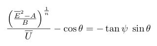where E overbar is the mean anemometer voltage, A, B and n are the coefficients determined from the velocity calibration, U is velocity at which the angle calibration was carried out, θ is the angle of the probe to the flow and ψ is the effective wire angle that you are determining from the angle calibraition.
Step 1
The hot wire bridges must first be balanced for the desired probe and the bridge tested and adjusted to give optimal frequency response. A cross wire velocity calibration then needs to be preformed before carrying out an angle calibration
The hot wire probe needs to be placed in a low turbulence steady flow and be held in such a way as will allow the angle of the probe to be changed with respect to the oncoming flow. 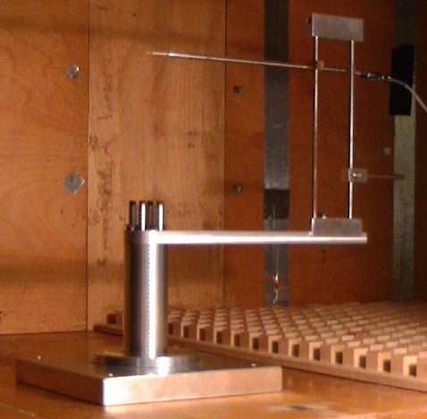In this example the hot wire signal is connected to Channel 2 and 3 of the ADC488 connection box and the signal from the micromanometer is connected to Channel 0.
Step 2
If LabVIEW is not running Launch it and open the EnFlo_Hub.vi as shown below

Click on the Calibration icon to open the calibration program.
Step 3
This is the Calibration.vi which should now be showing. It should have initialised itself to show the most recent calibration that has been carried out, or be blank if this is the first calibration carried out using Calibration.vi on this machine
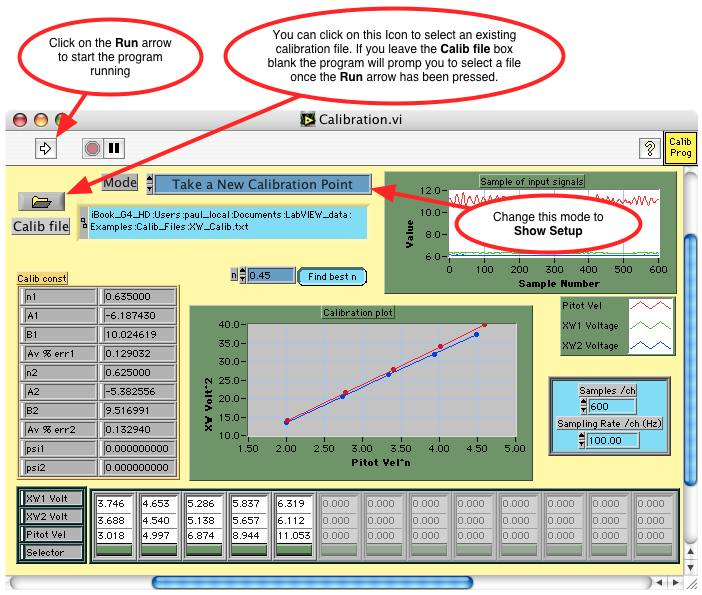The same filename XW_Calib.txt should be used as the previous velocity calibration since a completed cross wire calibration file contains information about both the velocity and angle calibrations.
Click on the Run arrow to show the calibration setup
Step 4
If the Calib file box on the Calibration.vi was left blank the file dialog will appear asking the user to choose a new or existing calibration file. The Calibration file chosen in this example is /Users/paul_local/Documents/LabVIEW_data/Examples/Calib_Files/XW_Calib.txt
The Calibration User input dialog should now be displayed
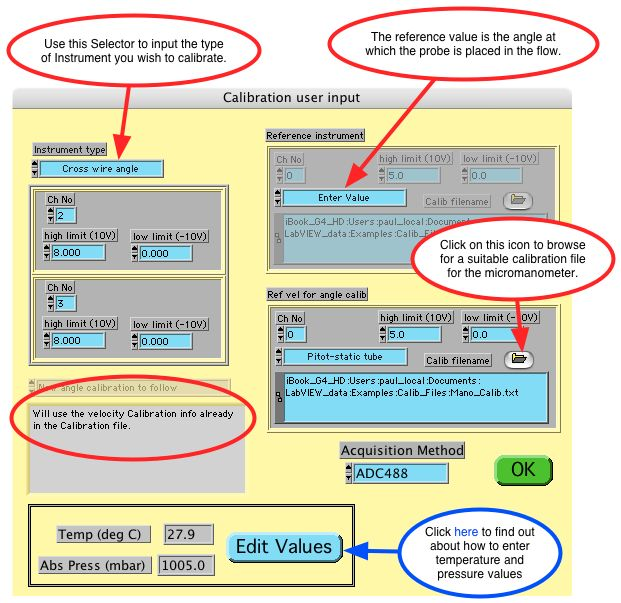Firstly change the Instrument type to Cross wire angle
The reason for requesting the Ref vel for angle calib information is to enable the Calibration.vi to correct for any slight variation in tunnel speed during the angle calibration which should be carried out at a nominally constant velocity.
Press the green OK button after having set this panel appropriately
Step 5
If the Calib Filename for the micromanometer (connected to the pitot-static tube) could not be found the user will be prompted to search for a suitable calibration file via the file dialog box.

The Calibration file chosen in this example is /Users/paul_local/Documents/LabVIEW_data/Examples/Calib_Files/Mano_Calib.txt created during the Micromanometer calibration.
Step 6
The Hot Wire Setup dialog should now be displayed

This should have already been set up correctly when the velocity calibration was performed.
Press the green OK button after having set this panel appropriately
Step 7
Now all the setup dialogs have been answered the Calibration.vi should look like this
Before running the Calibration.vi the wind tunnel speed needs to be set to a value roughly in the middle of the range of velocities intended to be measured. In this example the tunnel speed was set to 7m/s for the entire angle calibration
Step 8
If the wind tunnel you are working on has LabVIEW speed control, go to the EnFlo_Hub.vi and click on the icon Tunnel Speed Control in the User tab to launch the panel shown below, or manually control the tunnel speed
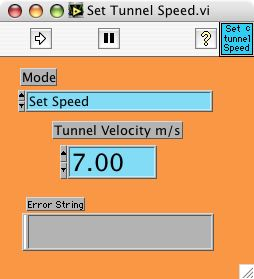Type in the desired Tunnel Velocity m/s value and click on the Run arrow to set the tunnel speed
Step 9
The XW probe angle was set to -25 degrees
Now click back on the Calibration.vi to make it the active window or select it from the LabVIEW Window menu bar
The only remaining values to set on Calibration.vi front panel are the number of samples Samples/ch and the sampling rate Sampling Rate /ch (Hz).
Click on the Run arrow when the pressure transducer has settled at the first calibration value.
Step 10
After the micromanometer has been sampled for 6 seconds the Input Value Dialog should be displayed
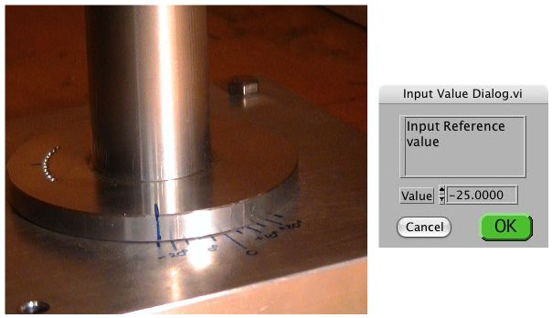Enter the XW probe angle into the Input Value Dialog.vi panel, then press the green OK button
Step 11
When the Calibration.vi stops running the first calibration point should be displayed
The velocity trace from the pitot-static tube and the voltage traces from the two hot wire anemometer are shown in the plot labelled Sample of input signals, and their average values are recorded in the lower array.
The calibration constants psi1 and psi2 are NaN (Not a Number) since these cannot be evaluated from just one calibration point
Step 12
The XW probe angle was set to -15 degrees
Click on the Run arrow of the Calibration.vi to take the next calibration point
Step 13
After the micromanometer has been sampled for 6 seconds the Input Value Dialog should be displayed
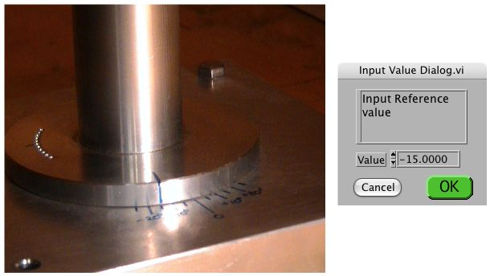Enter the XW probe angle into the Input Value Dialog.vi panel, then press the green OK button
Step 14
When the Calibration.vi stops running the first two calibration points should be displayed
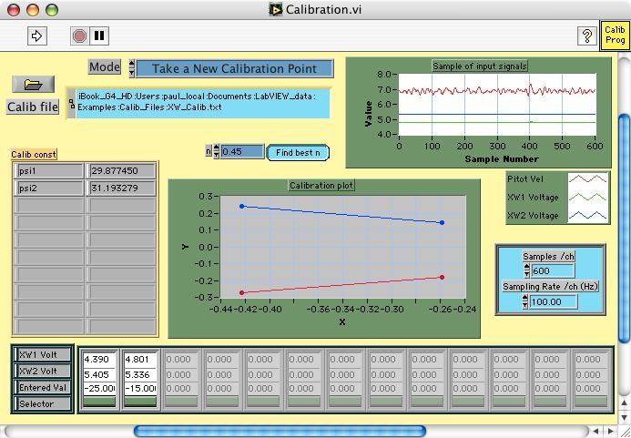The calibration constants psi1 and psi2 are now shown for the staight line fit through the equation:
where E overbar is the mean anemometer voltage, A, B and n are the coefficients determined from the velocity calibration, U is velocity at which the angle calibration was carried out, θ is the angle of the probe to the flow and ψ is the effective wire angle that you are determining from the angle calibraition.
On the calibration plot:
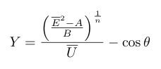and
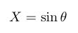And the gradient of the fitted straight line will be tan ψ
To add the next calibration point repeat Step 12 and Step 13 for a XW probe angle of -5 degrees
Step 15
When the Calibration.vi stops running 3 calibration points should be displayed
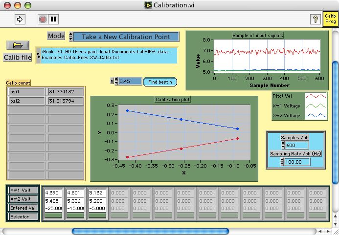To add the next calibration point repeat Step 12 and Step 13 for a XW probe angle of +5 degrees
Step 16
When the Calibration.vi stops running 4 calibration points should be displayed

To add the next calibration point repeat Step 12 and Step 13 for a XW probe angle of +15 degrees
Step 17
When the Calibration.vi stops running 5 calibration points should be displayed
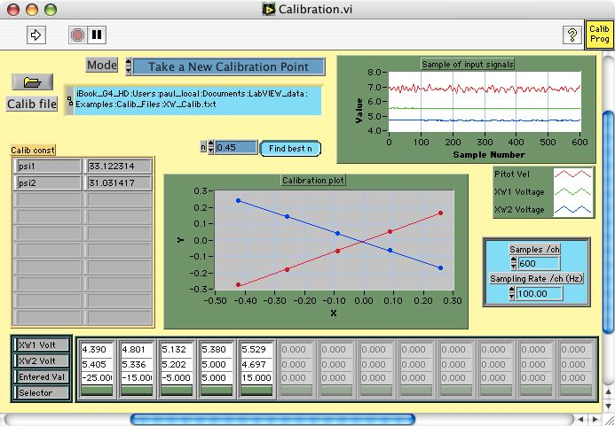To add the next calibration point repeat Step 12 and Step 13 for a XW probe angle of +25 degrees
Step 18
The Calibration.vi displaying 6 calibration points is shown below
This would be considered a good cross wire angle calibration since the two fitted lines go quite well through all the points
The cross wire angle calibration has now been completed but before this cross wire calibration file can be used by Measurement.vi a further Velocity Calibration is recomended.